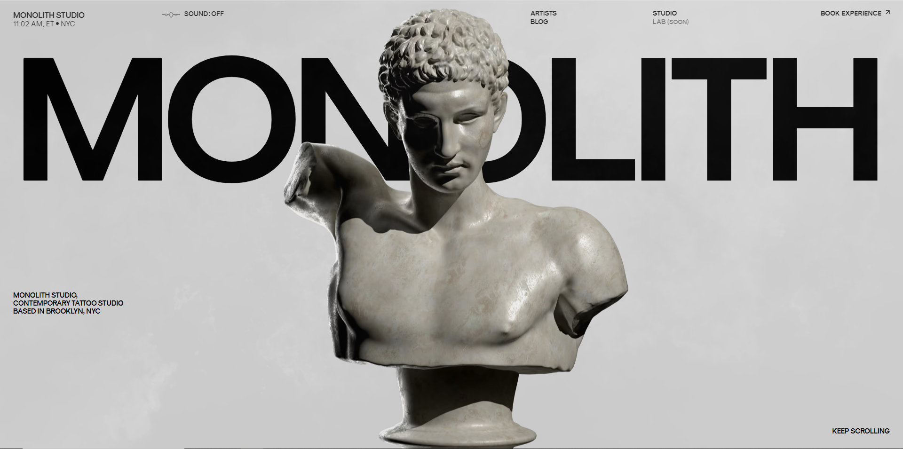

AQUI ESTAN LAS WEBS QUE ME HAN GUSTADO
Me gusta el juego de la escultura con la tipografía

Me encanta que nada mas entrar aparezca un video con una edicion espectacular en la que se enseñe sus principales proyectos

Me ha interesado que sea interactivo y que a medida que vas bajando la escultura principal vaya cambiando de posición

Muy entretenido ya que a medida que vas bajando los proyectos van variando y esta lleno de interacciones para que la gente juegue con su portfolio